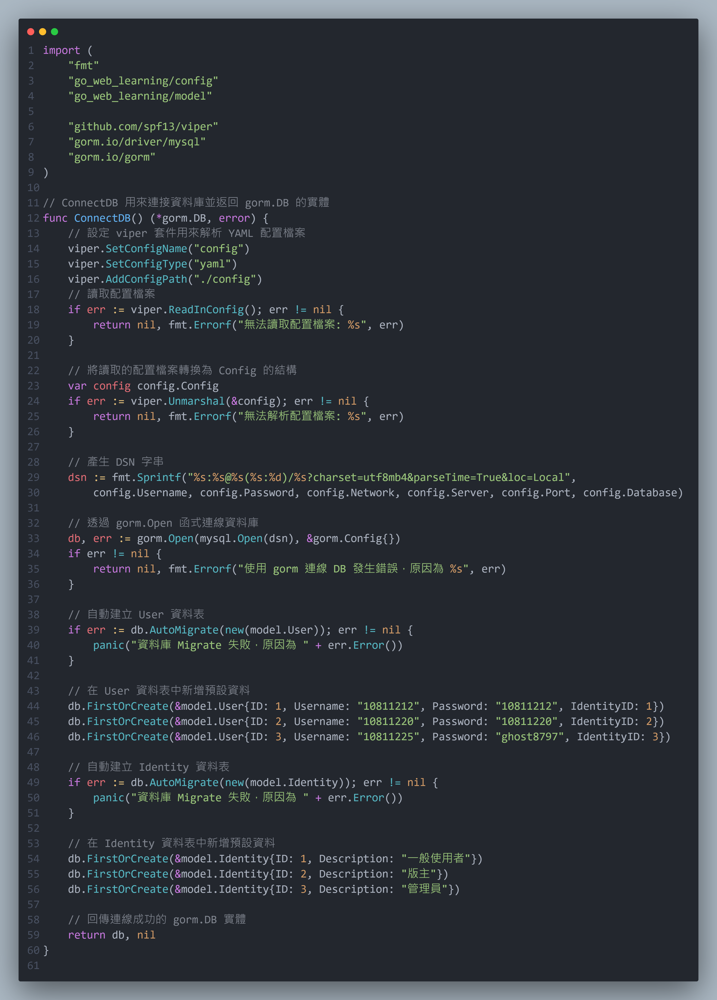
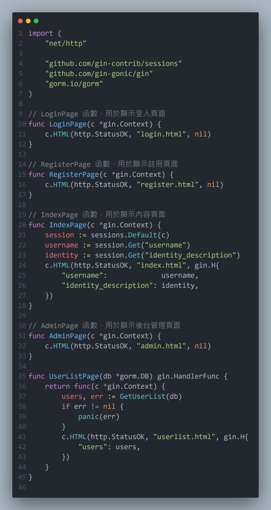
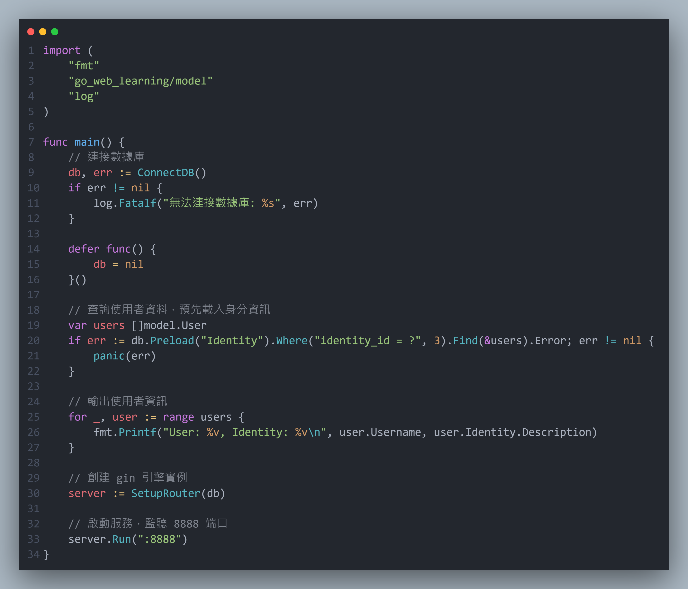
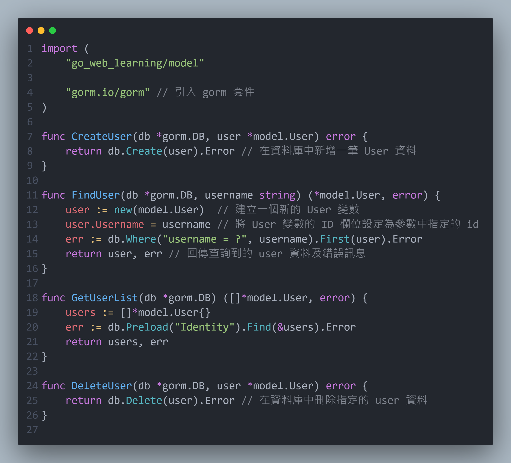
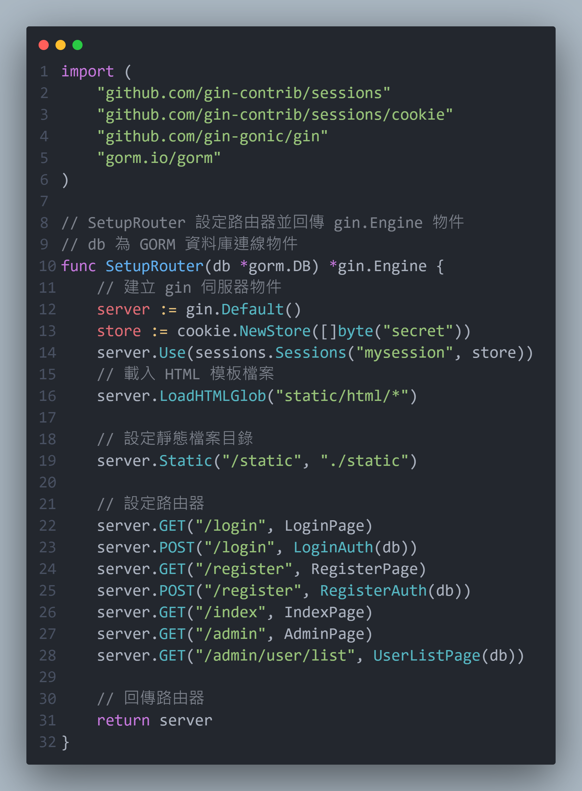
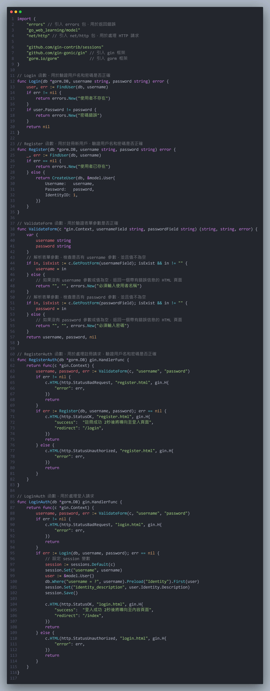
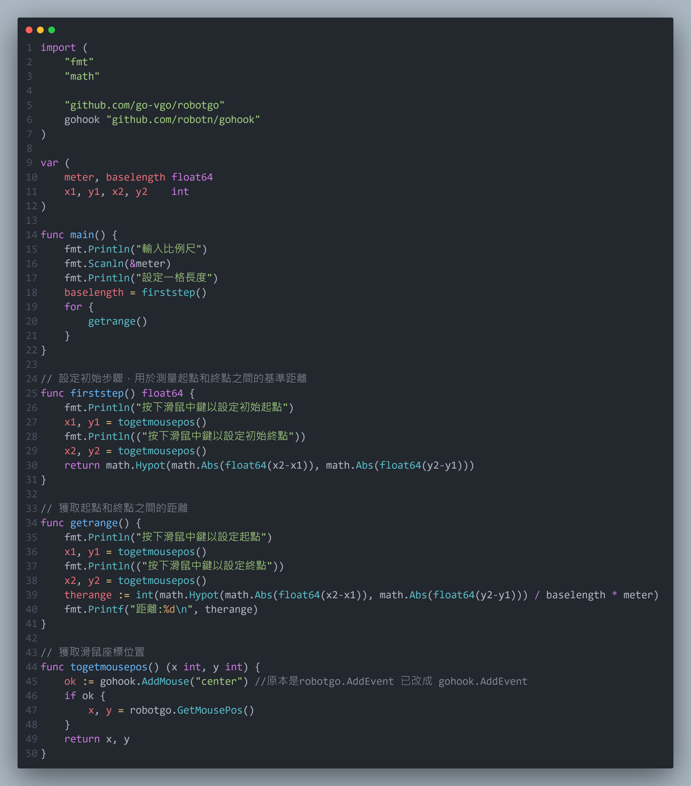
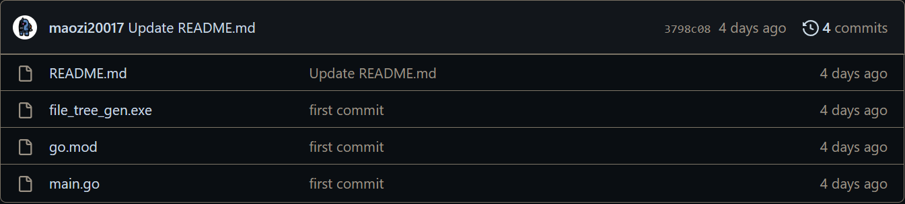
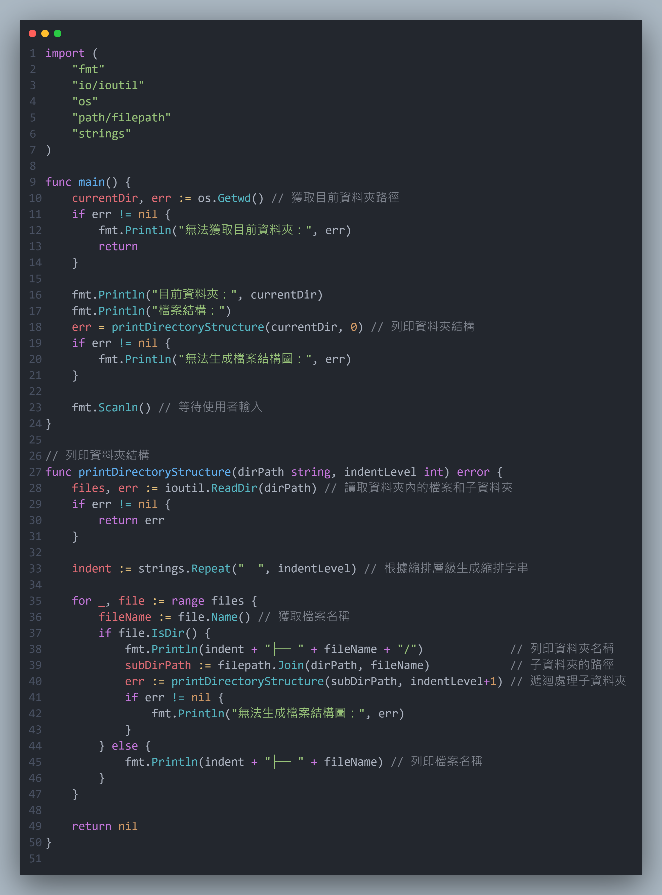
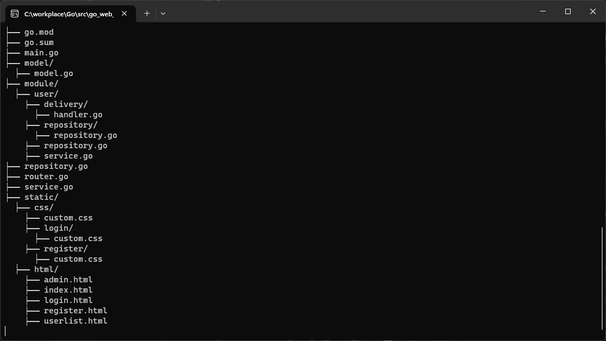

config：設定檔
model：存取儲存的帳號資訊型態
static：html 和 css
database.go：連接資料庫
delivery.go：處理顯示介面
repository.go：資料庫處理
router.go：設定路由
service.go：處裡網頁請求
謝竣丞
聯繫方式
0966557768
個人簡述
- 男，彰化人，國立台東大學資訊工程系畢業（2023/6），2001年生，待役（大約2023/2入伍）
- 主要研究方向：Golang開發
- 工作意向：後端工程師
專業技能
- 主要使用Golang
- 基礎git操作
- 使用gin、gorm等開發框架
- 使用HTML、CSS等網頁開發語言
經歷
- IET ICETA2022工程技術與應用國際研討會
- 2023第19屆科技教育研究與發展學術研討會暨第12屆工程、技術與STEM教育研討會
- 智慧健康專題講座：感測器系統晶片整合應用專題
Multicultural Knowledge and Information Literacy Learning Using AIoT Integration Technology
以虛實整合技術探討原民文化響應學習研究
實務經驗
- go_web_learning
- map_ranger
- file_tree_gen
- leetcode.cn-solution
- Resume
依照教學寫出來後再修改而成的網頁。
一個簡單的註冊登入系統，用gin（網頁開發框架的package）處理連線的部分，有連接mysql並用gorm（物件關係對映處理的package），用來儲存註冊的帳號。
目前有3個身分組（一般使用者、版主、管理員），帳號資訊跟身分組放在不同table並用外鍵連接，在登入後會用session儲存帳號資訊，只有管理員才可使用後台管理功能。
目前後台管理有顯示所有帳號資訊的功能。

database.go
使用 viper 套件來解析 YAML 格式的設定檔。
設定檔的名稱設定為 config.yaml，並且預期在相對路徑 ./config 下。
使用 viper.Unmarshal 將設定檔的內容解析並映射到 config.Config 結構中，用於保存資料庫連接相關的配置訊息。
根據設定檔，建立連接資料庫所需的 DSN 字串（資料庫連接字串），其中包含用戶名、密碼、網路類型、伺服器名稱、埠號和資料庫名稱等資訊。
使用 gorm.Open 函數透過 mysql.Open 驅動程式連接到 MySQL 資料庫，並將返回的 gorm.DB 實例存儲在 db
變數中。
如果連接過程中出現錯誤，則返回錯誤信息。
使用 db.AutoMigrate 自動建立 User 和 Identity 資料表。這個函數會檢查資料庫中是否存在這些資料表，如果不存在則創建。
使用 db.FirstOrCreate 在 User 和 Identity 資料表中新增預設資料。
這個函數會檢查資料表中是否已經存在指定條件的資料，如果不存在則新增。
返回成功連接的 gorm.DB 實例和一個空的錯誤值（如果連接成功）。

delivery.go
LoginPage 函數：用於處理顯示登入頁面的請求。使用 c.HTML 方法渲染名為 "login.html" 的 HTML 的 HTML 並返回。
RegisterPage 函數：用於處理顯示註冊頁面的請求。
使用 c.HTML 方法渲染名為 "register.html" 的 HTML 並返回。
IndexPage 函數：用於處理顯示內容頁面的請求。從 session 中獲取使用者名稱和身份描述，然後使用 c.HTML 方法渲染名為 "index.html" 的 HTML 模板，並將使用者名稱和身份描述作為模板變數傳遞給模板。
AdminPage 函數：用於處理顯示後台管理頁面的請求。
使用 c.HTML 方法渲染名為 "admin.html" 的 HTML 並返回。
UserListPage 函數：用於處理顯示 UserList 頁面的請求。
調用了一個名為 GetUserList 的函數，該函數使用傳遞的 gorm.DB
實例從資料庫中獲取使用者列表。
然後，使用 c.HTML 方法渲染名為 "userlist.html" 的 HTML 模板並將使用者列表作為模板變數傳遞給模板。

main.go
首先呼叫 ConnectDB 函數來建立與資料庫的連接，並將返回的資料庫對象存儲在 db 變數中。
如果無法連接資料庫，則會輸出錯誤信息並終止程式的執行。
使用 defer 關鍵字延遲執行一個匿名函數，以確保在 main 函數結束時關閉資料庫連接。
通過 db.Preload("Identity").Where("identity_id = ?", 3).Find(&users) 來查詢管理者的資料。使用 Preload 方法預先載入使用者的身份資訊（即 Identity）。查詢的結果將存儲在 users 切片中。
使用一個迴圈遍歷 users 切片，並輸出每個使用者的名稱和身份描述。
呼叫 SetupRouter 函數創建一個 Gin 引擎的實例，並將資料庫對象作為參數傳遞。
呼叫 server.Run(":8888") 啟動服務，監聽 8888 端口。

repository.go
CreateUser 函數：接收一個 gorm.DB 實例和一個 model.User 的指標作為參數。它在資料庫中創建一個新的使用者，並將傳遞的使用者對象插入到資料庫中。
FindUser 函數：接收一個 gorm.DB 實例和使用者名稱作為參數。它在資料庫中根據使用者名稱查詢對應的使用者，並將結果返回。
GetUserList 函數：接收一個 gorm.DB 實例作為參數。它從資料庫中獲取所有使用者的列表，並將結果存儲在一個 []*model.User 切片中返回。
同時，還使用 Preload 方法預先加載了使用者的身份（Identity）資訊。
DeleteUser 函數：接收一個 gorm.DB 實例和一個 model.User 的指標作為參數。它從資料庫中刪除指定的使用者。

router.go
SetupRouter 函數：該函數接收一個 gorm.DB 的資料庫連線物件作為參數，並返回一個已設定好的 Gin 路由器（gin.Engine）物件。
建立 Gin 伺服器物件：使用 gin.Default() 建立一個預設的 Gin 伺服器物件。
建立會話存儲：使用 cookie.NewStore([]byte("secret")) 建立一個基於 Cookie 的會話存儲，並指定使用的密鑰為 "secret"。
設定會話中介軟體：使用 sessions.Sessions("mysession", store) 設定 Gin 伺服器使用的會話中介軟體，並命名會話為 "mysession"。
載入 HTML 模板檔案：使用 server.LoadHTMLGlob("static/html/*") 載入指定目錄下的 HTML 模板檔案，以供後續路由處理函數使用。
設定靜態檔案目錄：使用 server.Static("/static", "./static") 設定 "/static" 路徑對應到 "./static" 目錄，使該目錄下的靜態檔案能夠被伺服器訪問。
設定路由：使用 server.GET 和 server.POST 函數設定各個路由的處理函數，並指定相應的處理函數。
返回路由器：最後，將設定好的 Gin 路由器物件返回。

service.go
Login 函數：驗證使用者名稱和密碼是否正確。
接收一個 gorm.DB 作為資料庫連接，並檢索使用者資訊進行驗證。
Register 函數：註冊新使用者並驗證使用者名稱和密碼是否正確。
接收一個 gorm.DB 作為資料庫連接，並檢查使用者名稱是否已存在，然後創建一個新的使用者。
ValidateForm 函數：驗證表單參數是否正確。
接收一個 gin.context 以獲取表單參數，並檢查使用者名稱和密碼是否存在並符合要求。
RegisterAuth 函數：處理註冊請求。
調用 ValidateForm 函數檢驗表單參數的正確性，然後調用 Register 函數進行註冊，根據結果返回相應的 html 頁面。
LoginAuth 函數：處理登入請求。
調用 ValidateForm 函數檢驗表單參數的正確性，然後調用 Login 函數進行登入驗證，根據結果返回相應的 html 頁面。



訊息會根據 session 有所變動。


mysql資料庫。
我玩的遊戲中有一個小地圖，遊戲中我需要測量我與敵人的距離，所以就寫了這個程式。
但因為從設定初始長度到測量都是人工操作（用兩點鼠標計算距離），所以會有一定的誤差，距離不是十分準確。
原本打算用圖像辨識來讓測距自動化，但遊戲本身的設計會讓要辨識的物件閃爍導致辨識難度增加，因此還是以人工操作為主。
現在因為package版本問題主程式無法運作，但執行檔依舊可以使用。

map_ranger.go
主函數（main）：程式的進入點。
首先輸入比例尺，然後調用 firststep 函數來設定起點和終點之間的基準距離。
接著進入一個無窮迴圈，不斷調用 getrange 函數來獲取起點和終點之間的距離。
firststep 函數：用於設定起點和終點之間的基準距離。
按下滑鼠中鍵來設定起點位置，然後再次按下滑鼠中鍵來設定終點位置。
最後，計算並返回起點和終點之間的直線距離，作為基準距離。
getrange 函數：用於獲取起點和終點之間的距離。
按下滑鼠中鍵來設定起點位置，然後再次按下滑鼠中鍵來設定終點位置。
接著，根據基準距離和比例尺計算並顯示起點和終點之間的實際距離。
togetmousepos 函數：用於獲取滑鼠的座標位置。
使用 gohook 套件的 AddMouse 函數來監聽滑鼠事件，並使用 robotgo 套件的 GetMousePos 函數來獲取滑鼠的當前座標位置。
當滑鼠中鍵被按下時，它會返回滑鼠的 x 和 y 座標。


執行畫面。
做報告時用來顯示整體專案結構的小程式，把執行檔移到需要的資料夾並執行。

file_tree_gen.go
主函數（main）：程式的進入點。
使用 os.Getwd 函數獲取當前的工作目錄路徑，並將其列印出來。
然後調用 printDirectoryStructure 函數來列印目錄結構。最後，使用 fmt.Scanln 函數讓程式暫停，等待使用者的輸入，以便程式執行不被立即結束。
printDirectoryStructure 函數：用於接收目錄路徑（dirPath）和縮排層級（indentLevel）作為參數。
使用 ioutil.ReadDir 函數讀取指定目錄下的檔案和子目錄的資訊。
然後，對於每個檔案和子目錄，根據縮排層級生成縮排字串，並使用 fmt.Println 函數將檔案名稱或子目錄名稱列印出來。
如果遇到子目錄，則遞迴調用 printDirectoryStructure 函數處理子目錄，並將縮排層級+1。
這樣可以達到以樹狀結構的形式列印目錄結構的效果。


執行畫面。
刷leetcode留下的紀錄，有程式碼以及題目連結，目前93題。


個人履歷，也就是現在看到的這些，使用html和css完成，用github page發布。

能夠做些甚麼
- 創意和想法
- 專案開發協助
畢業專題中，我負責專題的指導和關卡設計。這個經驗讓我能夠提供新的創意和想法，以豐富專案的內容。我將努力思考如何改進流程、提升效率或解決問題。
通過在GitHub上傳項目，我對版本控制有了初步的認識。這使我能夠更有效地參與公司專案的開發並提供實質協助。
我熟悉常用的程式語言和開發工具，具備程式語言能力和問題解決能力。我能夠協助團隊進行代碼編寫、調試和優化，確保專案的高效和順利交付。
除此之外，我能夠與團隊成員合作，解決開發過程中的問題並共同追求卓越。
其他項目
- 以虛實整合技術探討原民文化響應學習研究
- steam工作坊
以虛擬實境技術（VR）結合原住民的文化，應用在這個少數文化需要被重視以及保存的時代，把文化的保存數位化，能安全並完整留存完整物品，且能推動相關的教育。
運用VR的環境來設計，能以導覽及遊戲的方式來進行學習，進而推廣出部分少數民族的文化資產。
環境中能檢視或觀察族群相關的建築結構、圖騰，陶器等文物，同時做到數位留存及教育資源的提供。
分工：本人負責提供VR專案的建議與設計。

以博物館的形式展示，物件可拿取以近距離觀看。

組合石板屋場景。
目前有用xml寫模組的漢化包，主要做的是把各個翻譯者的漢化包做個統整。


附件